Estimate Prior with masked z scores
Dongyue Xie
2021-01-15
Last updated: 2021-02-08
Checks: 7 0
Knit directory: maskedmash/
This reproducible R Markdown analysis was created with workflowr (version 1.6.2). The Checks tab describes the reproducibility checks that were applied when the results were created. The Past versions tab lists the development history.
Great! Since the R Markdown file has been committed to the Git repository, you know the exact version of the code that produced these results.
Great job! The global environment was empty. Objects defined in the global environment can affect the analysis in your R Markdown file in unknown ways. For reproduciblity it’s best to always run the code in an empty environment.
The command set.seed(20210205) was run prior to running the code in the R Markdown file. Setting a seed ensures that any results that rely on randomness, e.g. subsampling or permutations, are reproducible.
Great job! Recording the operating system, R version, and package versions is critical for reproducibility.
Nice! There were no cached chunks for this analysis, so you can be confident that you successfully produced the results during this run.
Great job! Using relative paths to the files within your workflowr project makes it easier to run your code on other machines.
Great! You are using Git for version control. Tracking code development and connecting the code version to the results is critical for reproducibility.
The results in this page were generated with repository version b237e99. See the Past versions tab to see a history of the changes made to the R Markdown and HTML files.
Note that you need to be careful to ensure that all relevant files for the analysis have been committed to Git prior to generating the results (you can use wflow_publish or wflow_git_commit). workflowr only checks the R Markdown file, but you know if there are other scripts or data files that it depends on. Below is the status of the Git repository when the results were generated:
Ignored files:
Ignored: .DS_Store
Ignored: .Rhistory
Ignored: .Rproj.user/
Ignored: code/.DS_Store
Untracked files:
Untracked: code/calc_post.R
Untracked: code/ebupdate.R
Untracked: code/genData.R
Untracked: code/genData2rank1.R
Untracked: code/mashr/
Untracked: code/maskedmash.R
Untracked: code/maskedmd.R
Untracked: code/plot_ztilde.R
Untracked: code/utils.R
Untracked: data/ztilde.png
Unstaged changes:
Modified: analysis/index.Rmd
Note that any generated files, e.g. HTML, png, CSS, etc., are not included in this status report because it is ok for generated content to have uncommitted changes.
These are the previous versions of the repository in which changes were made to the R Markdown (analysis/estimatePrior.Rmd) and HTML (docs/estimatePrior.html) files. If you’ve configured a remote Git repository (see ?wflow_git_remote), click on the hyperlinks in the table below to view the files as they were in that past version.
| File | Version | Author | Date | Message |
|---|---|---|---|---|
| Rmd | b237e99 | Dongyue Xie | 2021-02-08 | wflow_publish(“analysis/estimatePrior.Rmd”) |
Introduction
Estimate prior covariance matrices with masked z scores and run masked mash.
- run deconvolution using masked z scores, estimate prior covairance matrices
- run masked mash.
library(devtools)Loading required package: usethisload_all('code/mashr/')Loading mashrLoading required package: ashr
Attaching package: 'testthat'The following object is masked from 'package:devtools':
test_filesource('code/genData.R')
source('code/maskedmash.R')
source('code/ebupdate.R')
source('code/maskedmd.R')
source('code/utils.R')
source('code/calc_post.R')
u1 = c(1,1,0,0,0)
u2 = c(0,0,1,1,1)
cov1 = tcrossprod(u1)
cov1[1,1] = 1
cov2 = tcrossprod(u2)
cov2[5,5] = 2
cov2[4,4] = 1
U = list(U1=cov1,U2=cov2)
U$U1
[,1] [,2] [,3] [,4] [,5]
[1,] 1 1 0 0 0
[2,] 1 1 0 0 0
[3,] 0 0 0 0 0
[4,] 0 0 0 0 0
[5,] 0 0 0 0 0
$U2
[,1] [,2] [,3] [,4] [,5]
[1,] 0 0 0 0 0
[2,] 0 0 0 0 0
[3,] 0 0 1 1 1
[4,] 0 0 1 1 1
[5,] 0 0 1 1 2signal_sd = 2
set.seed(12345)
simdata = genData(300,U,signal_sd)
data = mash_set_data(simdata$Bhat,simdata$Shat)Let’s try to run mash: the ED intializaiton are some random postive definite matrices generated from Wishart distribution.
U.c = cov_canonical(data)
# init at random
U.init = list(U1 = rWishart(1,5,diag(5))[,,1],
U2 = rWishart(1,5,diag(5))[,,1],
U3 = rWishart(1,5,diag(5))[,,1])
U.init = normalize_Ulist(U.init)
U.ed = cov_ed(data,Ulist_init = U.init)
lapply(U.ed,round,digits=2)$ED_U1
[,1] [,2] [,3] [,4] [,5]
[1,] 0.72 0.30 -0.10 -0.39 0.70
[2,] 0.30 0.16 -0.42 -0.52 -0.05
[3,] -0.10 -0.42 7.02 6.44 5.74
[4,] -0.39 -0.52 6.44 6.06 4.92
[5,] 0.70 -0.05 5.74 4.92 5.67
$ED_U2
[,1] [,2] [,3] [,4] [,5]
[1,] 0.04 -0.01 0.11 0.12 0.16
[2,] -0.01 0.07 0.16 0.16 -0.21
[3,] 0.11 0.16 2.99 3.04 4.05
[4,] 0.12 0.16 3.04 3.11 4.03
[5,] 0.16 -0.21 4.05 4.03 9.41
$ED_U3
[,1] [,2] [,3] [,4] [,5]
[1,] 4.49 4.45 0.01 0.05 -0.25
[2,] 4.45 4.45 0.02 0.04 -0.26
[3,] 0.01 0.02 0.01 0.00 -0.01
[4,] 0.05 0.04 0.00 0.03 -0.02
[5,] -0.25 -0.26 -0.01 -0.02 0.04U.ed = lapply(U.ed,function(x){x+0.01*diag(5)})
out_mash = mash(data, c(U.c,U.ed),verbose = F)
lfsr_list = seq(0.01,0.5,length.out = 100)
power_mash = c()
fdp_mash = c()
for(l in 1:length(lfsr_list)){
temp = fdp_power(out_mash$result$lfsr,simdata$B,alpha = lfsr_list[l])
power_mash[l] = temp$power
fdp_mash[l] = temp$fdp
}
# init at pca
# U.pca = cov_pca(data,5,subset=NULL)
# out.ed = cov_ed(data,Ulist_init = U.pca)
# out_mash1 = mash(data, c(U.c,out.ed),verbose = F)
# fdp_power(out_mash1$result$lfsr,simdata$B)Using rank one matrix needs additional attention - add the random effect. For now, we do not use rank one matrix as initialization(so the output is not rank 1).
Let’s check the masked.md function by using the original z scores. The estimated ones are very similar to cov_ed outputs.
out.md.check = masked.md(data,thresh=1e5,U.data = U.init,max_iter = 100,printevery = 50)[1] "Done 50 iterations, loglikelihood at -5379.13"plot(out.md.check$loglik,type='l',ylab = 'loglik',xlab='iterations')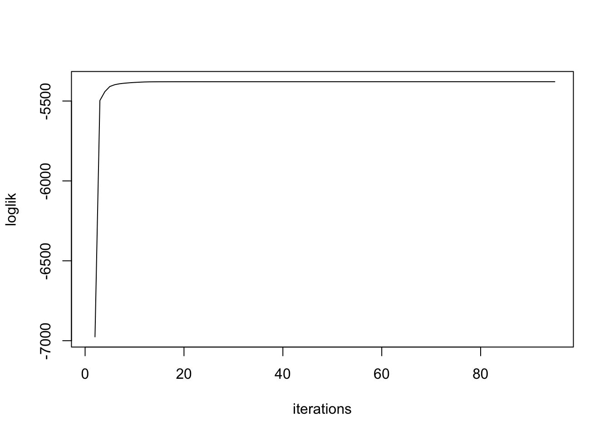
lapply(out.md.check$U.est,round,digits=2)$U1
[,1] [,2] [,3] [,4] [,5]
[1,] 2.17 1.98 -0.03 0.75 -0.53
[2,] 1.98 1.86 0.02 0.65 -0.53
[3,] -0.03 0.02 0.04 -0.03 -0.03
[4,] 0.75 0.65 -0.03 0.27 -0.16
[5,] -0.53 -0.53 -0.03 -0.16 0.16
$U2
[,1] [,2] [,3] [,4] [,5]
[1,] 0.17 0.03 0.06 -0.01 0.29
[2,] 0.03 0.03 0.02 0.00 -0.19
[3,] 0.06 0.02 4.01 3.91 4.56
[4,] -0.01 0.00 3.91 3.86 4.34
[5,] 0.29 -0.19 4.56 4.34 8.80
$U3
[,1] [,2] [,3] [,4] [,5]
[1,] 5.15 5.19 0.02 -0.18 -0.15
[2,] 5.19 5.22 0.02 -0.18 -0.15
[3,] 0.02 0.02 0.00 0.00 0.00
[4,] -0.18 -0.18 0.00 0.01 0.01
[5,] -0.15 -0.15 0.00 0.01 0.00mask all z scores
Now run “masked deconvolution”.
out.md = masked.md(data,U.data = U.init,max_iter = 100,printevery = 50)[1] "Done 50 iterations, loglikelihood at -1897.91"
[1] "Done 100 iterations, loglikelihood at -1896.75"plot(out.md$loglik,type='l',ylab = 'loglik',xlab='iterations')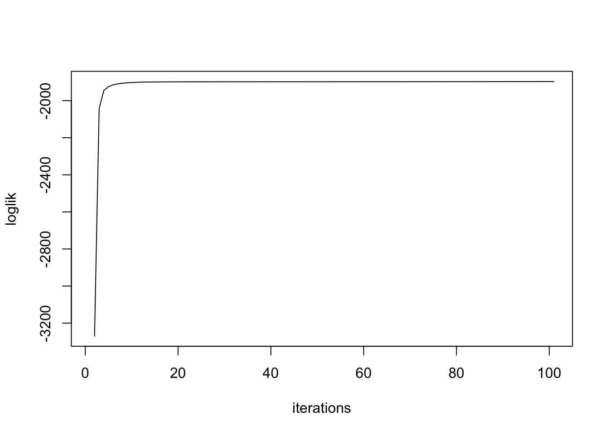
lapply(out.md$U.est,round,digits=2)$U1
[,1] [,2] [,3] [,4] [,5]
[1,] 4.73 4.63 0.14 -0.01 -0.47
[2,] 4.63 4.54 0.18 -0.01 -0.47
[3,] 0.14 0.18 0.16 0.00 -0.04
[4,] -0.01 -0.01 0.00 0.00 0.00
[5,] -0.47 -0.47 -0.04 0.00 0.05
$U2
[,1] [,2] [,3] [,4] [,5]
[1,] 0.12 -0.05 -0.02 -0.11 0.05
[2,] -0.05 0.03 -0.04 0.00 -0.10
[3,] -0.02 -0.04 4.06 3.98 4.52
[4,] -0.11 0.00 3.98 3.98 4.34
[5,] 0.05 -0.10 4.52 4.34 8.59
$U3
[,1] [,2] [,3] [,4] [,5]
[1,] 3.19 2.97 -0.51 0.01 1.20
[2,] 2.97 3.56 -0.35 0.03 0.20
[3,] -0.51 -0.35 0.16 -0.04 -0.20
[4,] 0.01 0.03 -0.04 0.03 -0.12
[5,] 1.20 0.20 -0.20 -0.12 1.86round(out.md$pi,2) U1 U2 U3
0.40 0.48 0.12 out.maskedmash = masked.mash(data,U.canon = U.c,U.data = out.md$U.est,
U.update = 'none',fixg = F,
usepointmass = TRUE,verbose = TRUE,printevery = 50)[1] "Done 50 iterations, loglikelihood at -1898.99"
[1] "Done 100 iterations, loglikelihood at -1897.72"
[1] "Done 150 iterations, loglikelihood at -1897.43"
[1] "Done 200 iterations, loglikelihood at -1897.32"#out_mash_use_masked.md = mash(data, c(U.c,out.md$U.est),verbose = F,outputlevel = 3)
#fdp_power(out_mash_use_masked.md$result$lfsr,simdata$B)
power_maskedmash = c()
fdp_maskedmash = c()
for(l in 1:length(lfsr_list)){
temp = fdp_power(out.maskedmash$lfsr,simdata$B,alpha = lfsr_list[l])
power_maskedmash[l] = temp$power
fdp_maskedmash[l] = temp$fdp
}
plot(lfsr_list,fdp_maskedmash,type='l',ylab="fdp",xlab="lfsr")
lines(lfsr_list,fdp_mash,col=3)
legend("bottomright",c("maskedmash","mash"),lty=c(1,1),col=c(1,3))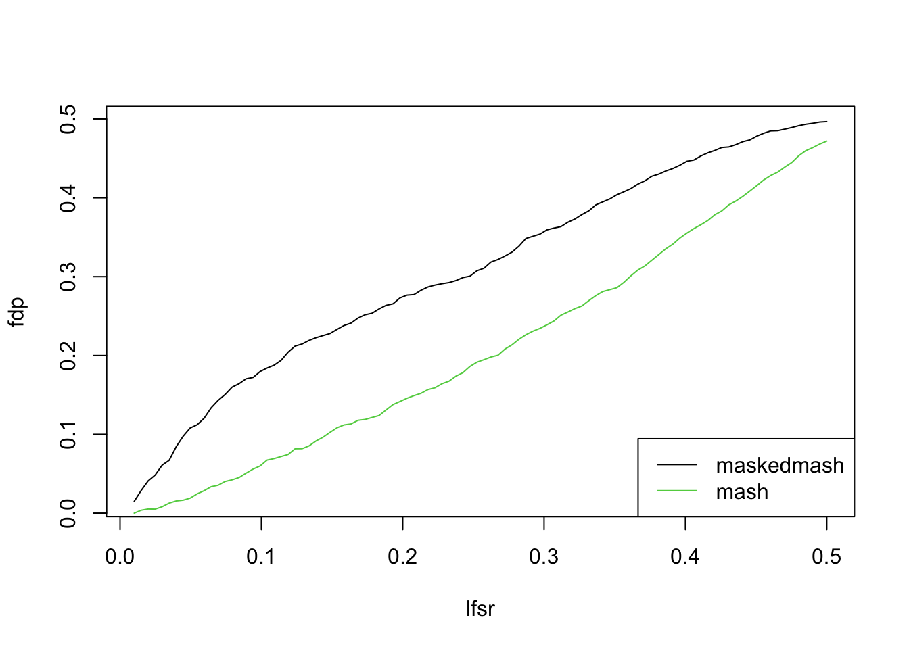
plot(lfsr_list,power_maskedmash,type='l',ylab="power",xlab="lfsr")
lines(lfsr_list,power_mash,col=3)
legend("bottomright",c("maskedmash","mash"),lty=c(1,1),col=c(1,3))
plot(fdp_maskedmash,power_maskedmash,type = 'l',ylab="power",xlab="fdp")
lines(fdp_mash,power_mash,col=3)
legend("bottomright",c("maskedmash","mash"),lty=c(1,1),col=c(1,3))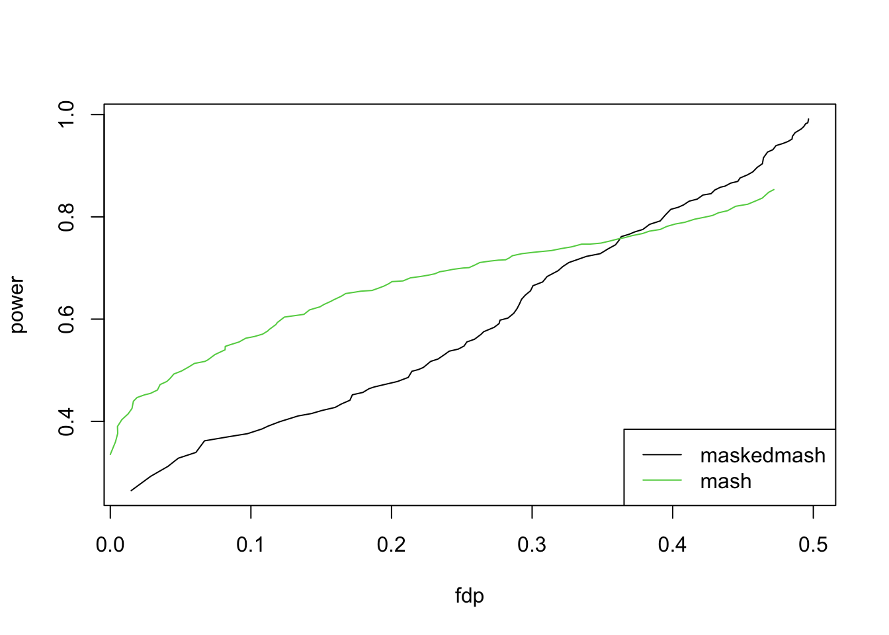
- run mash using masked deconvolution output
out_mash.md = mash(data, c(U.c,out.md$U.est),verbose = F)
power_mash.md = c()
fdp_mash.md = c()
for(l in 1:length(lfsr_list)){
temp = fdp_power(out_mash.md$result$lfsr,simdata$B,alpha = lfsr_list[l])
power_mash.md[l] = temp$power
fdp_mash.md[l] = temp$fdp
}- run maskedmash using ed output
out.maskedmash.ed = masked.mash(data,U.canon = U.c,U.data = U.ed,
U.update = 'none',fixg = F,
usepointmass = TRUE,verbose = TRUE,printevery = 50)[1] "Done 50 iterations, loglikelihood at -1903.85"
[1] "Done 100 iterations, loglikelihood at -1902.43"
[1] "Done 150 iterations, loglikelihood at -1902.16"
[1] "Done 200 iterations, loglikelihood at -1902.06"power_maskedmash.ed = c()
fdp_maskedmash.ed = c()
for(l in 1:length(lfsr_list)){
temp = fdp_power(out.maskedmash.ed$lfsr,simdata$B,alpha = lfsr_list[l])
power_maskedmash.ed[l] = temp$power
fdp_maskedmash.ed[l] = temp$fdp
}
plot(lfsr_list,fdp_maskedmash,type='l',ylab="fdp",xlab="lfsr")
lines(lfsr_list,fdp_mash,col=3)
lines(lfsr_list,fdp_mash.md,col=2)
lines(lfsr_list,fdp_maskedmash.ed,col=4)
legend('bottomright',c('mask.mash+mask.ed',"mash+ed","mash+mask.ed","mask.mash+ed"),lty=c(1,1,1,1),col=c(1,3,2,4))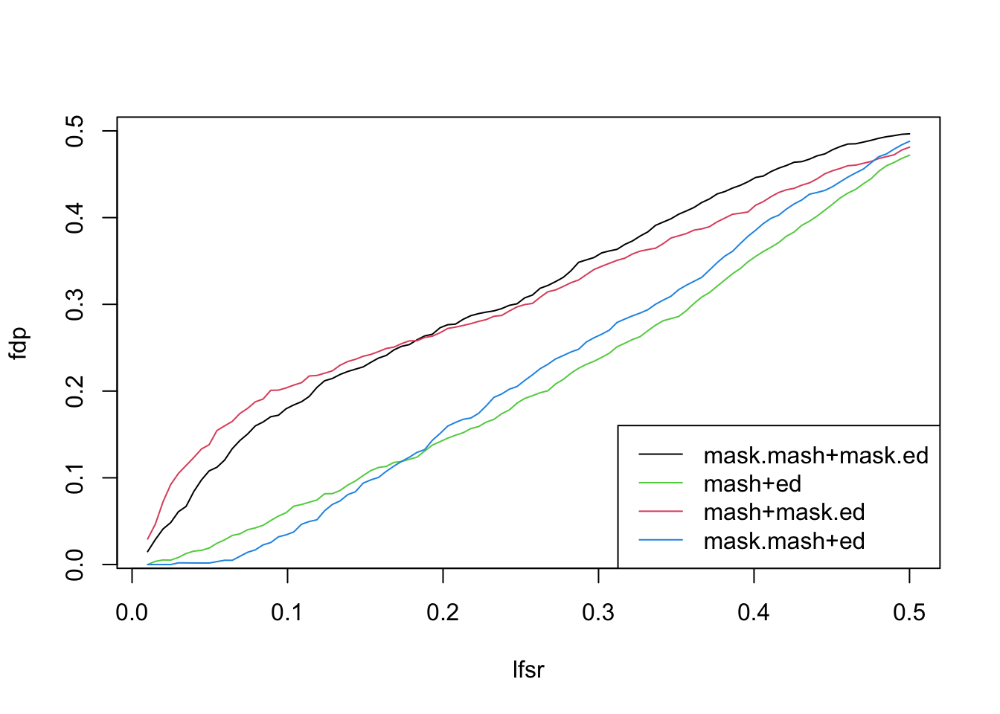
It seems that the masked ed needs to extra attention.
unlist(lapply(out.md$U.est,kappa)) U1 U2 U3
1.512908e+21 2.021384e+17 1.089841e+18 unlist(lapply(U.ed,kappa)) ED_U1 ED_U2 ED_U3
1196.8504 1291.4573 446.9413 The condition number is huge. Let’s add a diagonal matrix to stablize it.
U.masked.re = lapply(out.md$U.est,function(x){x+0.01*diag(5)})
unlist(lapply(U.masked.re,kappa)) U1 U2 U3
771.4665 1077.6307 1169.1956 Now re-run maskedmash
out.maskedmash.re = masked.mash(data,U.canon = U.c,U.data = U.masked.re,
U.update = 'none',fixg = F,
usepointmass = TRUE,verbose = TRUE,printevery = 50)[1] "Done 50 iterations, loglikelihood at -1899.34"
[1] "Done 100 iterations, loglikelihood at -1898.06"
[1] "Done 150 iterations, loglikelihood at -1897.78"
[1] "Done 200 iterations, loglikelihood at -1897.67"#out_mash_use_masked.md = mash(data, c(U.c,out.md$U.est),verbose = F,outputlevel = 3)
#fdp_power(out_mash_use_masked.md$result$lfsr,simdata$B)
power_maskedmash.re = c()
fdp_maskedmash.re = c()
for(l in 1:length(lfsr_list)){
temp = fdp_power(out.maskedmash.re$lfsr,simdata$B,alpha = lfsr_list[l])
power_maskedmash.re[l] = temp$power
fdp_maskedmash.re[l] = temp$fdp
}
plot(lfsr_list,fdp_maskedmash.re,type='l',ylab="fdp",xlab="lfsr")
lines(lfsr_list,fdp_mash,col=3)
legend("bottomright",c("maskedmash","mash"),lty=c(1,1),col=c(1,3))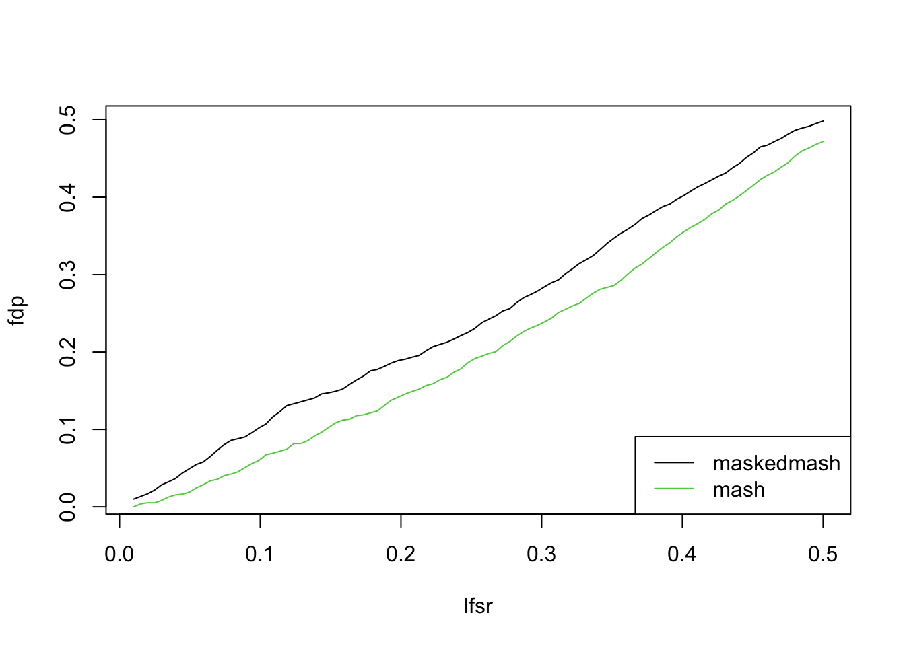
plot(lfsr_list,power_maskedmash.re,type='l',ylab="power",xlab="lfsr")
lines(lfsr_list,power_mash,col=3)
legend("bottomright",c("maskedmash","mash"),lty=c(1,1),col=c(1,3))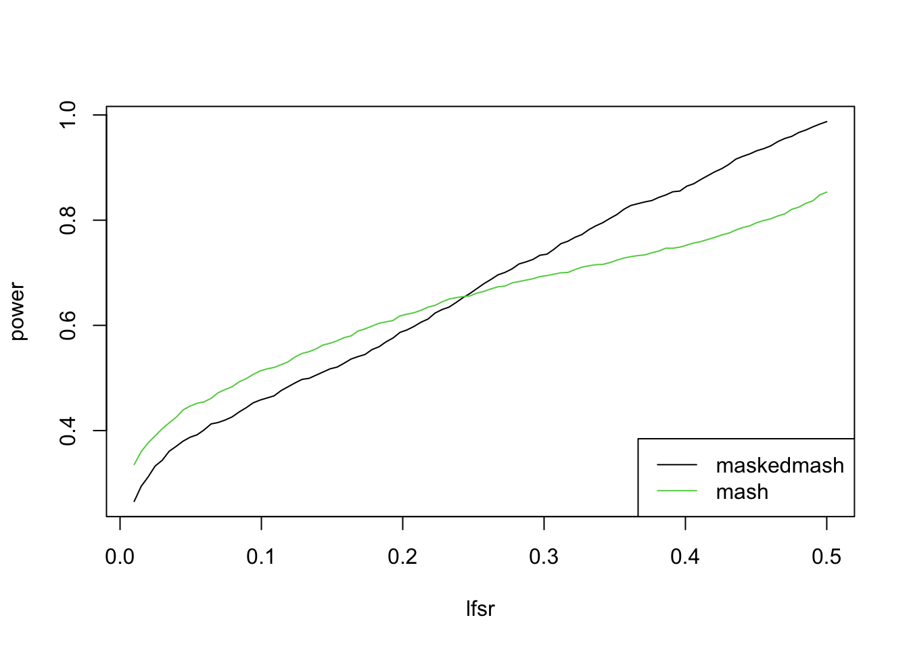
plot(fdp_maskedmash.re,power_maskedmash.re,type = 'l',ylab="power",xlab="fdp")
lines(fdp_mash,power_mash,col=3)
legend("bottomright",c("maskedmash","mash"),lty=c(1,1),col=c(1,3))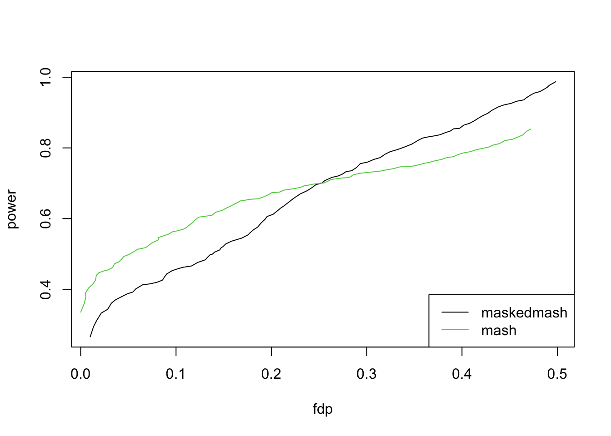
masked partial z scores
out.md2 = masked.md(data,U.data = U.init,max_iter = 100,printevery = 50,thresh = 2)[1] "Done 50 iterations, loglikelihood at -3523.89"
[1] "Done 100 iterations, loglikelihood at -3523.72"plot(out.md2$loglik,type='l',ylab = 'loglik',xlab='iterations')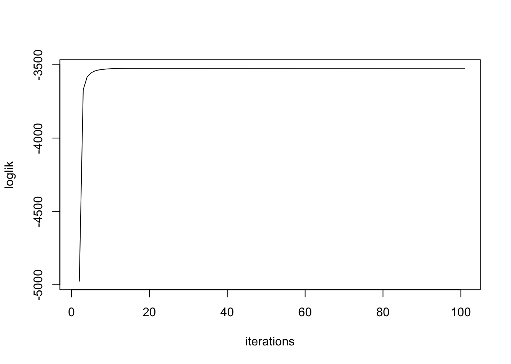
lapply(out.md2$U.est,round,digits=2)$U1
[,1] [,2] [,3] [,4] [,5]
[1,] 5.44 4.85 0.78 -0.27 -0.49
[2,] 4.85 4.38 0.75 -0.28 -0.46
[3,] 0.78 0.75 0.17 -0.08 -0.09
[4,] -0.27 -0.28 -0.08 0.04 0.04
[5,] -0.49 -0.46 -0.09 0.04 0.05
$U2
[,1] [,2] [,3] [,4] [,5]
[1,] 0.13 0.01 -0.01 -0.05 0.19
[2,] 0.01 0.05 0.01 -0.03 -0.20
[3,] -0.01 0.01 3.94 3.85 4.39
[4,] -0.05 -0.03 3.85 3.81 4.19
[5,] 0.19 -0.20 4.39 4.19 8.48
$U3
[,1] [,2] [,3] [,4] [,5]
[1,] 3.92 4.20 -0.26 0.25 -0.09
[2,] 4.20 4.50 -0.28 0.26 -0.10
[3,] -0.26 -0.28 0.02 -0.02 0.01
[4,] 0.25 0.26 -0.02 0.11 -0.09
[5,] -0.09 -0.10 0.01 -0.09 0.07round(out.md$pi,2) U1 U2 U3
0.40 0.48 0.12 unlist(lapply(out.md2$U.est,kappa)) U1 U2 U3
5.085003e+18 1.130196e+17 6.259596e+19 U.masked.re2 = lapply(out.md2$U.est,function(x){x+0.01*diag(5)})
unlist(lapply(U.masked.re2,kappa)) U1 U2 U3
933.8434 2625.8944 769.8508 out.maskedmash2 = masked.mash(data,U.canon = U.c,U.data = U.masked.re2,thresh=2,
U.update = 'none',fixg = F,
usepointmass = TRUE,verbose = TRUE,printevery = 50)[1] "Done 50 iterations, loglikelihood at -3526.68"
[1] "Done 100 iterations, loglikelihood at -3525.65"
[1] "Done 150 iterations, loglikelihood at -3525.41"
[1] "Done 200 iterations, loglikelihood at -3525.31"out.maskedmash2$maskedProp[1] 0.2583333power_maskedmash.re2 = c()
fdp_maskedmash.re2 = c()
for(l in 1:length(lfsr_list)){
temp = fdp_power(out.maskedmash2$lfsr,simdata$B,alpha = lfsr_list[l])
power_maskedmash.re2[l] = temp$power
fdp_maskedmash.re2[l] = temp$fdp
}
plot(lfsr_list,fdp_maskedmash.re,type='l',ylab="fdp",xlab="lfsr")
lines(lfsr_list,fdp_mash,col=3)
lines(lfsr_list,fdp_maskedmash.re2,col=4)
legend("bottomright",c("maskedmash","mash","maskedmash25.8%"),lty=c(1,1,1),col=c(1,3,4))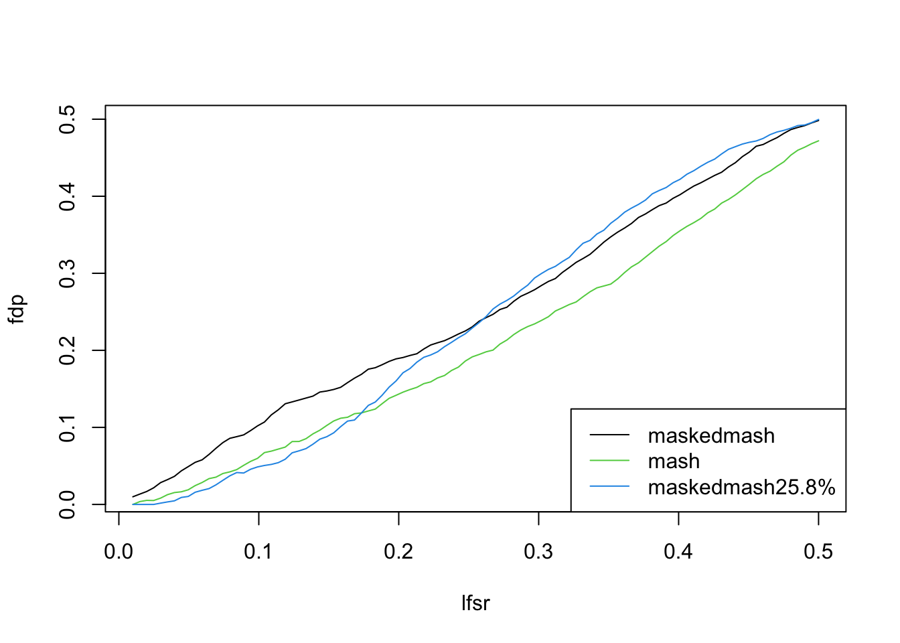
plot(lfsr_list,power_maskedmash.re,type='l',ylab="power",xlab="lfsr")
lines(lfsr_list,power_mash,col=3)
lines(lfsr_list,power_maskedmash.re2,col=4)
legend("bottomright",c("maskedmash","mash","maskedmash25.8%"),lty=c(1,1,1),col=c(1,3,4))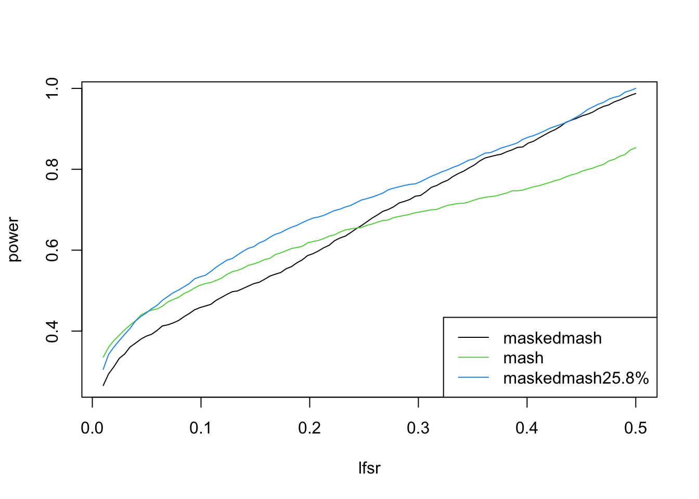
plot(fdp_maskedmash.re,power_maskedmash.re,type = 'l',ylab="power",xlab="fdp")
lines(fdp_mash,power_mash,col=3)
lines(fdp_maskedmash.re2,power_maskedmash.re2,col=4)
legend("bottomright",c("maskedmash","mash","maskedmash25.8%"),lty=c(1,1,1),col=c(1,3,4))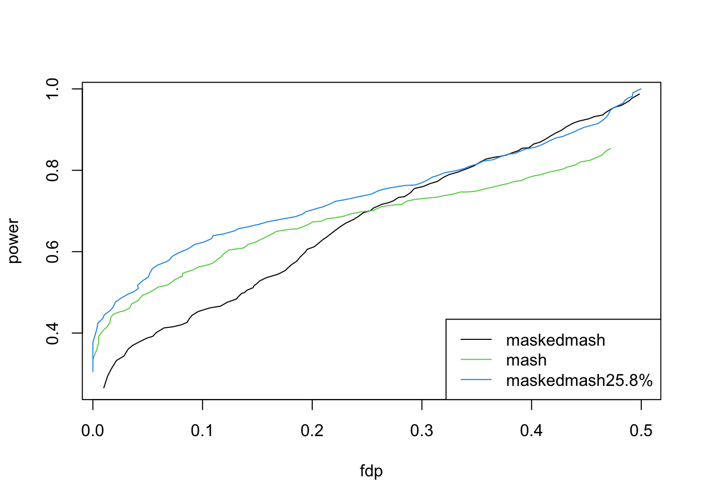
Non-normal Distribution
Consider a situation when the model is mis-speicifed, for example test statistics follow a multivariate t distribution.
sessionInfo()R version 4.0.3 (2020-10-10)
Platform: x86_64-apple-darwin17.0 (64-bit)
Running under: macOS High Sierra 10.13.6
Matrix products: default
BLAS: /Library/Frameworks/R.framework/Versions/4.0/Resources/lib/libRblas.dylib
LAPACK: /Library/Frameworks/R.framework/Versions/4.0/Resources/lib/libRlapack.dylib
locale:
[1] en_US.UTF-8/en_US.UTF-8/en_US.UTF-8/C/en_US.UTF-8/en_US.UTF-8
attached base packages:
[1] stats graphics grDevices utils datasets methods base
other attached packages:
[1] mashr_0.2.40 testthat_3.0.0 ashr_2.2-47 devtools_2.3.2
[5] usethis_1.6.3 workflowr_1.6.2
loaded via a namespace (and not attached):
[1] xfun_0.18 remotes_2.2.0 lattice_0.20-41 vctrs_0.3.4
[5] htmltools_0.5.0 yaml_2.2.1 rlang_0.4.8 pkgbuild_1.1.0
[9] mixsqp_0.3-43 later_1.1.0.1 pillar_1.4.6 glue_1.4.2
[13] withr_2.3.0 sessioninfo_1.1.1 plyr_1.8.6 lifecycle_0.2.0
[17] stringr_1.4.0 mvtnorm_1.1-1 memoise_1.1.0 evaluate_0.14
[21] knitr_1.30 callr_3.5.1 httpuv_1.5.4 ps_1.4.0
[25] invgamma_1.1 irlba_2.3.3 fansi_0.4.1 Rcpp_1.0.5
[29] promises_1.1.1 backports_1.1.10 rmeta_3.0 desc_1.2.0
[33] pkgload_1.1.0 abind_1.4-5 truncnorm_1.0-8 fs_1.5.0
[37] digest_0.6.27 stringi_1.5.3 processx_3.4.4 rprojroot_1.3-2
[41] grid_4.0.3 cli_2.1.0 tools_4.0.3 magrittr_1.5
[45] tibble_3.0.4 crayon_1.3.4 whisker_0.4 pkgconfig_2.0.3
[49] ellipsis_0.3.1 Matrix_1.2-18 SQUAREM_2020.5 prettyunits_1.1.1
[53] assertthat_0.2.1 rmarkdown_2.5 rstudioapi_0.11 R6_2.4.1
[57] git2r_0.27.1 compiler_4.0.3